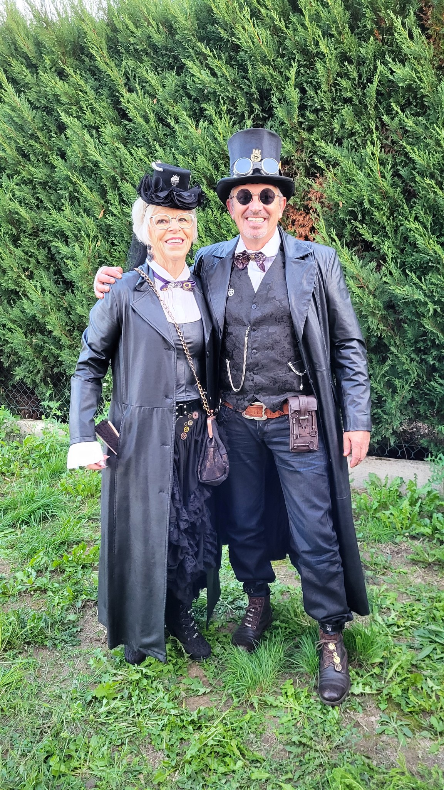

Les créations Kothe
Bonjour, nous sommes ravis de vous présenter nos créations artisanales. Nous sommes passionnés par la création d'objets de décoration uniques, faits à la main. Notre objectif est de vous offrir des pièces qui ajoutent une touche d'élégance et de charme à votre intérieur ou extérieur. Nous espérons que vous apprécierez notre travail autant que nous avons aimé le créer.